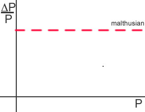

Is a Malthusian catastrophe what we observe in our bacterial cultures? Are human headed for a similar catastrophe? why or why not?
The idea that f and d are constants leads to the prediction of exponential growth of populations. The idea that biological populations will grow exponentially, whereas the growth in available resources grows more slowly, lead Malthus to the pessimistic view that biological populations in general and the human population in particular would outstrip the supply of food – leading inevitably to a catastrophic decline in population size that could only be avoided by self-discipline or other behaviors, such as marrying at a later age, contraception, abortion, or homosexuality. |
| |
Is a Malthusian catastrophe what we observe in our bacterial cultures? Are human headed for a similar catastrophe? why or why not? |
In an "undisciplined" Malthusian population, the change in population per individual (ΔP/P or the per capita growth rate) is a constant. Based on your own data on E. coli growth, graph the relationship that you found between ΔP/P and P. Is the relationship a simple line? |
 |
| last modified: 8 August 2004 |